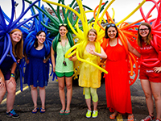

Geneva Nemzek, Web Developer
Story

My whole life I've always been interested in two things: technology and people. I graduated from Concordia College in 2014 with a degree in Sociology and started my Web Development degree at M|State in the fall of 2015. In between my time at Concordia and my time at M|State, I worked as a reference librarian, where I was able to see firsthand how technology can change lives.
My dream is to sit at the intersection where my great passion meets the world's great need, and I can't wait to see where that takes me. I believe in changing the world, one bit of code at a time.
ProjectsEducation
My education at Concordia College taught me a lot about people. I learned about social systems and oppression, and I also learned a lot about myself and the world around me.
When I was gearing up to graduate from Concordia, I started realizing my dream of becoming a web developer, so I learned what I could on my own for a couple of years before attending M-State's online Web Development program.
The M-State Web Development program took me more in depth with what I had already learned, and my development bookshelf has grown massively since enrolling. At M-State, I've taken 9 courses so far: Foundations of Web Development, Foundations of Web Design, HTML, CSS, JavaScript & jQuery, PHP & MySQL, UX Design, Multimedia, and Photoshop. Check out my courses page for a more indepth look at the classes I took.
CoursesExperience
Online Communications Intern, Concordia College
I learned quite a bit at the Office of Communications and Marketing at Concordia during my 3 years there as a student. I started off learning about content writing and video editing, but soon I discovered web development and fell in love. With the college web developer as my mentor, I learned all about HTML, CSS, JavaScript/jQuery, different content management systems, different CSS frameworks, and how to create WordPress themes. This was my entry into the world of web development and got me started on my journey.
Library Associate I, Lake Agassiz Regional Library
Right after I graduded, I became a reference librarian. I learned a lot about how people use technology and how tecnhology can help improve the lives of others. While I was a librarian, I taught a lot of basic computers classes, but I also had the opportunity to create and teach HTML and CSS classes. Through this, I gained a deeper understanding of HTML and CSS both.
ResumeInvolvement
Co-President, Straight and Gay Alliance at Concordia College
As a co-president of the Straight and Gay Alliance (SAGA), I learned how to work as a team to get things done. My co-president and I co-led weekly meetings, put on weeks of events every semester, and helped to create the material that the Safe Space Committee on campus used to help faculty and staff become more aware of issues facing the lgbtq+ community. My involvement in SAGA was the beginning of my adult activism, and I left the experience having learned a ton.
President of the Board, Fargo/Moorhad Pride Collective and Community Center
My involvement at the Pride Collective and Community Center (PCCC) started out small - I was an intern that kept weekly office hours and helped out whoever walked in the door. Eventually I became a board member, and a little whlie after that, I was elected President. Throughout my time there, I helped moved the organization to a bigger space in a better location, I revamped the organization's website, and I built out the social media, adding Instagram, Twitter, and Tumblr to the mix.
Committee Member, Moorhead Human Rights Commission
As a committee member of the HRC in Moorhead, I attended monthly meetings at City Hall to discuss issues of human rights in the city of Moorhead. The commission itself focused on human rights and how to best assure that the rights of all people in Moorhead were being met.